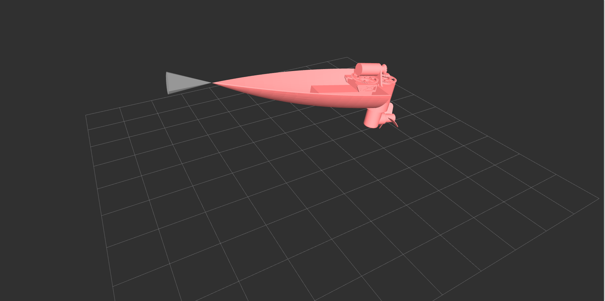
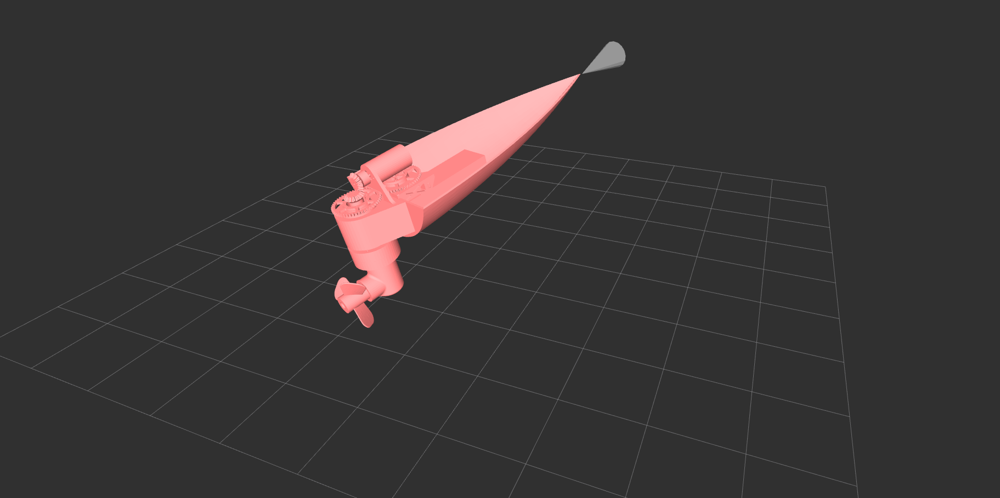

RoBoat
A Wifi TeleOperated Motor Boat


The RoBoat is a ROS operated motorboat. The software package I designed lets you control the rotation of the prop and the motor speed with the keyboard. It also lets you visualize gyro data in
RVIZ, aswell as displaying ultrasonic sensor data as a cone. The Arduino code prints the gyro data and ultrasonic data through serial for the package to read and
then display in RVIZ. This was very interesting to code as previous Arduino-to-ROS programs rely on the rosserial library. I started having issues with the library when declaring a node on the Arduino used half the board's dynamic memory, which impacted the reliability of the sensor data. I did a lot of research and edited an existing package to allow for a direct serial comunication between the Arduino and ROS, allowing the node to be declared on the computer instead. This increased the reliability of the sensor data. This alternative method reduced the Arduino Uno's dynamic memory usage by 50%. I was the sole software developer for this project. I used the skills that I aquired in ROS from my co-op and applied them to a self-started side project.
These screenshots show the visualization of the gyro and ultrasonic data as I rotate the Arduino.


This video was taken while I used my keyboard to control the prop and motor speeds. It shows the inner working of the boat's gear and servo system.
This video showed the boat with the full prop setup. It was taken while I manipulated motor values with the keyboard. During the video I moved the Arduino around to show
how the orientation changed in the visualizer. It also showed the ultrasonic cone as I moved that sensor closer and farther away from the wall.
Project members: Seamus Johnston, Jiwoo Jang, Richard Li.


 RoboSwiffer was a robotic swiffer developped using Bluetooth communication, ultrasonic sensors and limit switches to map rooms and avoid obstacles. The project was completed for the 1A end of term design
symposium. I was the lead software developer and in charge of the majority of the testing and debugging. The robot was built with two NXT bricks, a laser cut and 3D printed frame.
We used PID feedback for consistent motor values and proper heading. The robot used sensor feedback to map the room and self generate a path.
RoboSwiffer was a robotic swiffer developped using Bluetooth communication, ultrasonic sensors and limit switches to map rooms and avoid obstacles. The project was completed for the 1A end of term design
symposium. I was the lead software developer and in charge of the majority of the testing and debugging. The robot was built with two NXT bricks, a laser cut and 3D printed frame.
We used PID feedback for consistent motor values and proper heading. The robot used sensor feedback to map the room and self generate a path.